Not sure which bin your item belongs in? Browse the 10 categories below to learn how to recycle, which container to use, and why it matters.
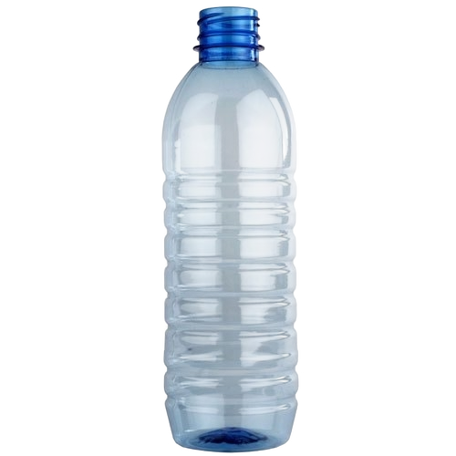
Plastic bottle
Plastic box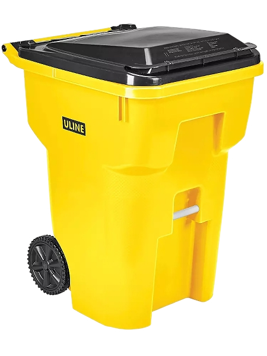
How to recycle
Why recycle
Recycling one plastic bottle saves enough energy to power a 60 W light bulb for 3 hours. Plastic takes up to 500 years to decompose in a landfill, releasing toxic chemicals into soil and water.
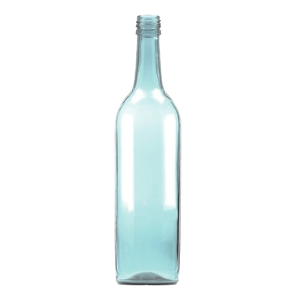
Glass bottle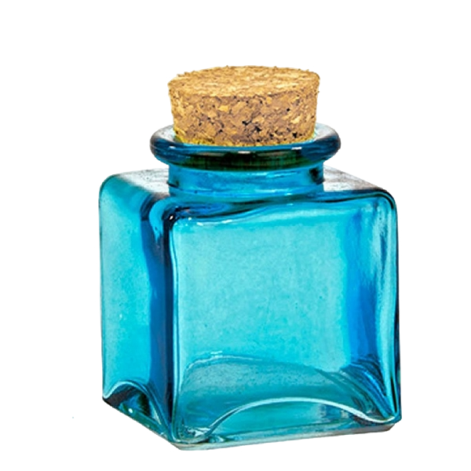
Glass jar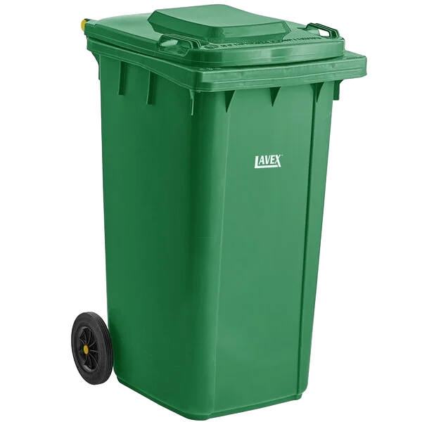
How to recycle
Why recycle
Glass is 100% recyclable and can be recycled endlessly without any loss of quality. Recycling one glass bottle saves enough energy to power a laptop for 25 minutes and reduces CO₂ emissions by 315 g.
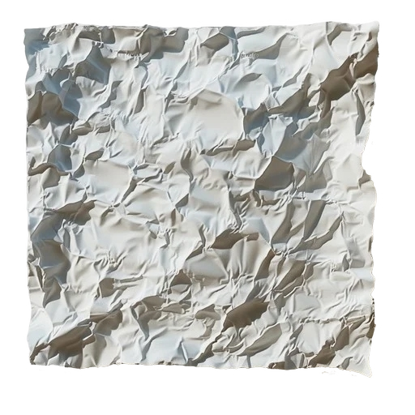
Paper sheets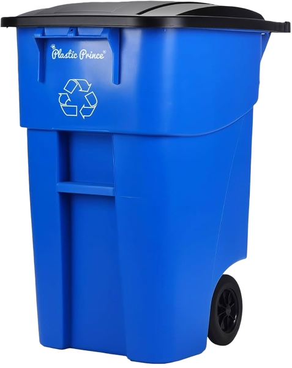
How to recycle
Why recycle
Recycling 1 tonne of paper saves 17 trees, 26,500 litres of water, and 4,100 kWh of energy. Every tonne of recycled paper also keeps 3 m³ of landfill space free.
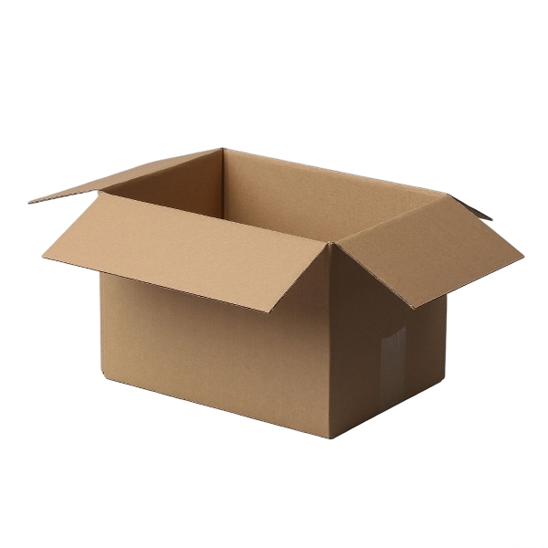
Cardboard box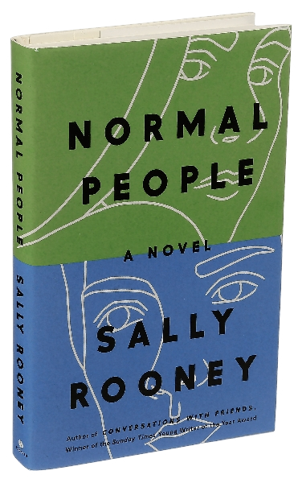
BookHow to recycle
Why recycle
Cardboard is one of the most widely recycled materials — up to 80% of corrugated cardboard is recovered globally. Recycling it cuts the energy needed to produce new cardboard by 75% and drastically reduces deforestation.
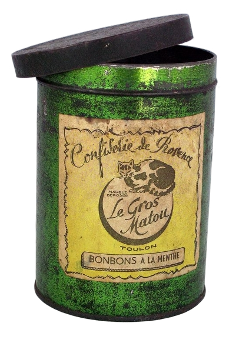
Tin can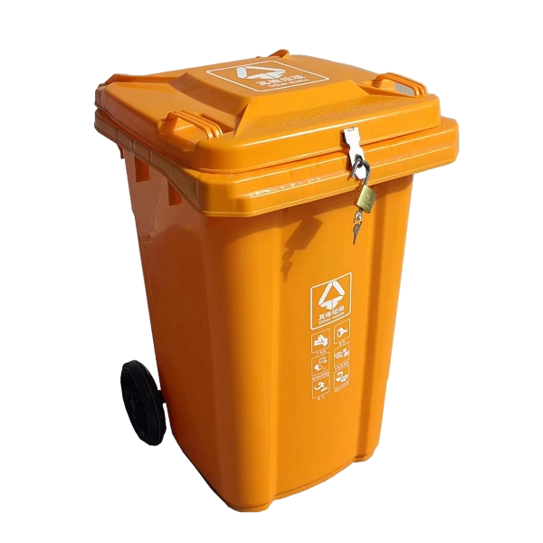
How to recycle
Why recycle
Aluminium can be recycled forever. Recycling one aluminium can saves enough energy to run a TV for 3 hours and produces 95% less CO₂ than making new aluminium from raw ore.
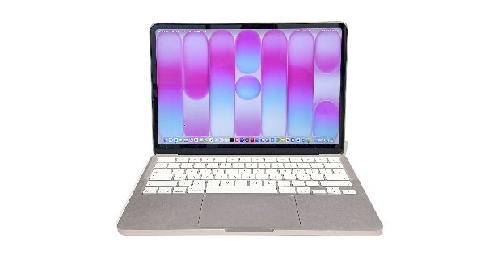
Laptop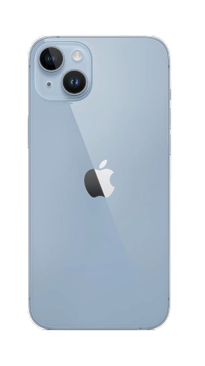
Mobile phone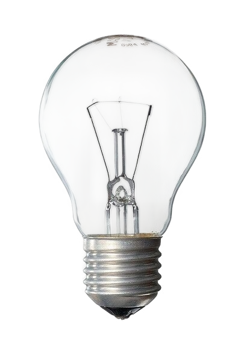
Light bulb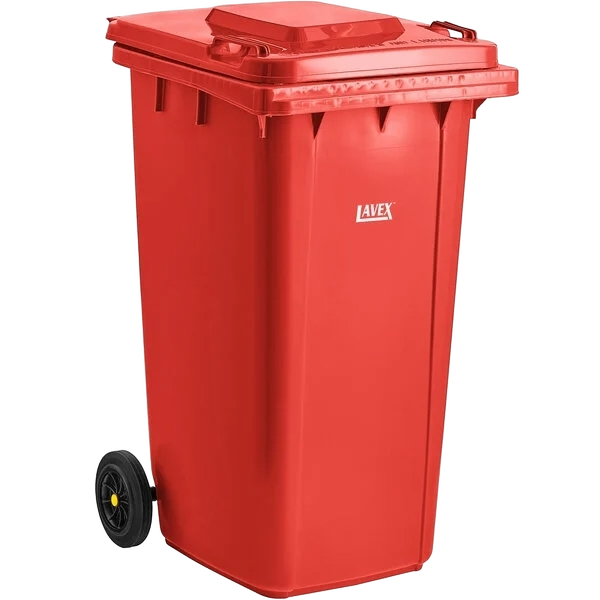
How to recycle
Why recycle
E-waste is the fastest-growing waste stream globally. A single smartphone contains gold, silver, copper, and rare earth metals. Recycling 1 million phones recovers ~35 kg of gold, 350 kg of silver, and 15,000 kg of copper.
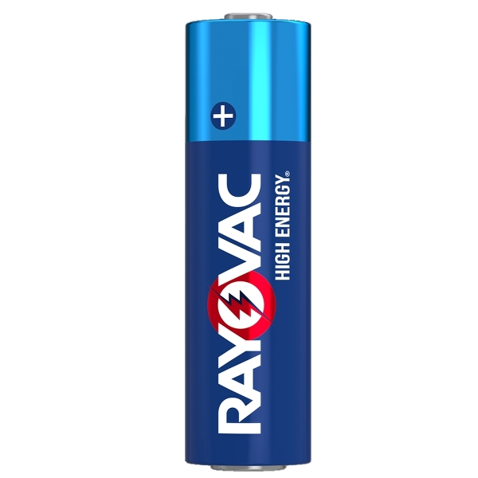
BatteriesHow to recycle
Why recycle
Batteries contain lead, mercury, cadmium, and lithium — all harmful to soil and groundwater. Properly recycling batteries recovers valuable materials and prevents toxic leachate from contaminating ecosystems for decades.
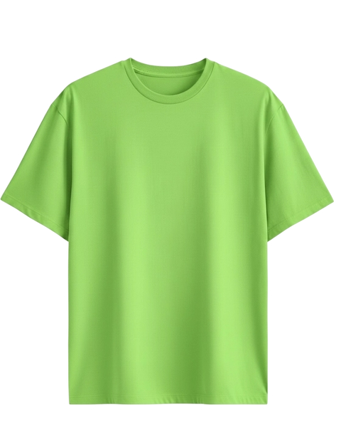
Shirt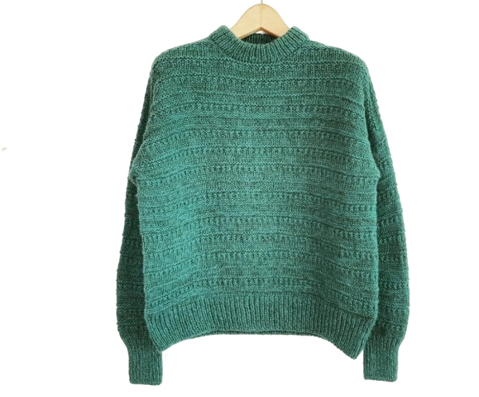
Sweater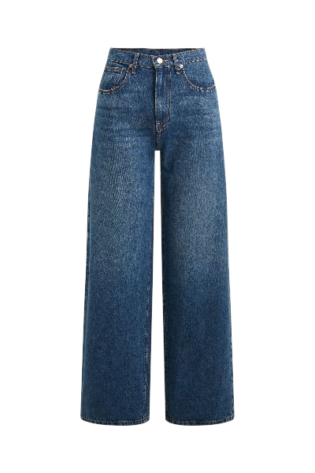
Jeans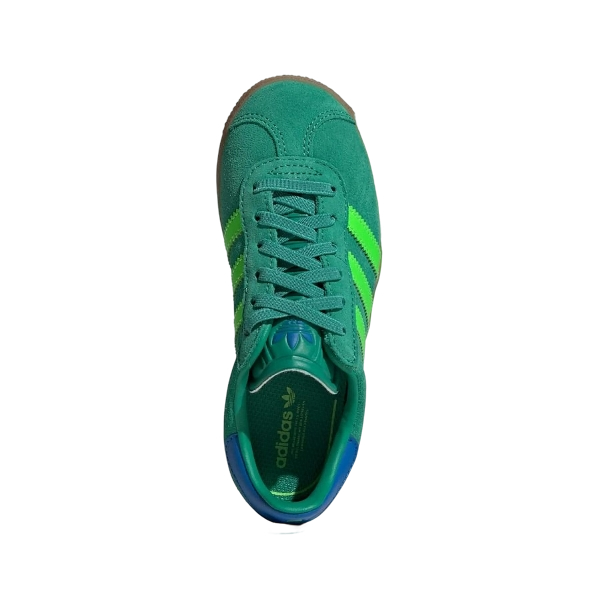
Shoes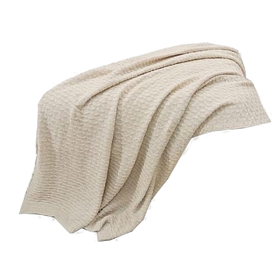
Textile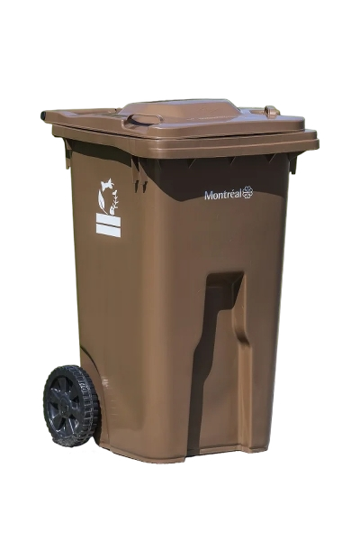
How to recycle
Why recycle
The fashion industry is the world's 2nd largest polluter. Recycling 1 kg of cotton saves 10,000 litres of water. Keeping clothes out of landfill reduces methane emissions and prevents synthetic fibres from entering waterways.
How to recycle
Why recycle
Organic waste in landfills produces methane — a greenhouse gas 25× more potent than CO₂. Composting instead turns waste into nutrient-rich soil improver, reducing the need for chemical fertilisers.
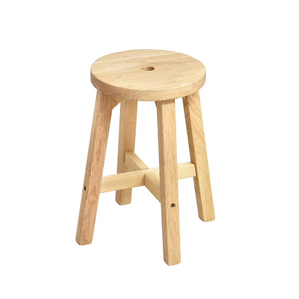
Wooden stool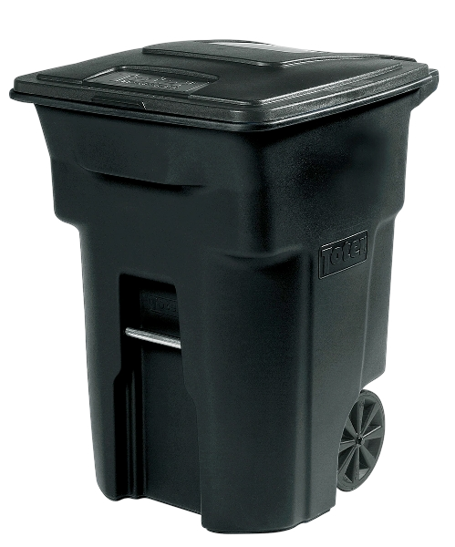
How to recycle
Why recycle
Wood makes up a significant portion of bulky waste. Recycled wood is chipped into biomass fuel, animal bedding, or particleboard. This diverts material from landfill and reduces the carbon locked in the wood from being released as methane.
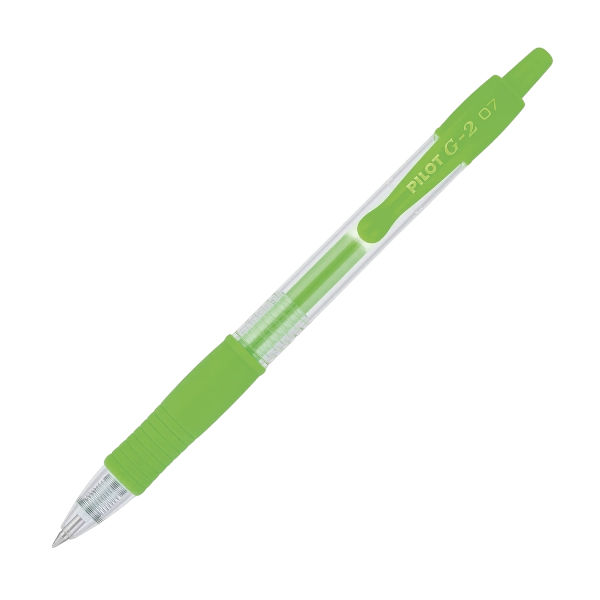
Pen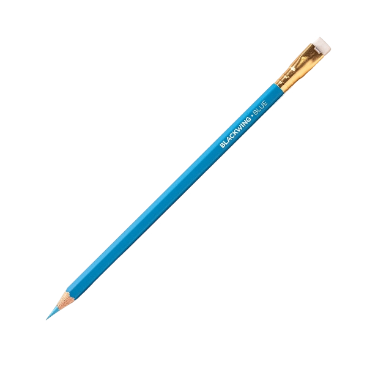
PencilHow to recycle
Why recycle
Billions of pens are thrown away every year worldwide, contributing to plastic pollution. Recycling through dedicated schemes recovers the plastic barrel, metal clip, and ink cartridge separately, keeping all three out of landfill.
How to recycle
Why recycle
Garden waste makes up around 20% of household waste. When composted, it becomes a valuable soil conditioner that improves soil structure, retains moisture, and reduces the need for synthetic fertilisers — closing the nutrient loop naturally.